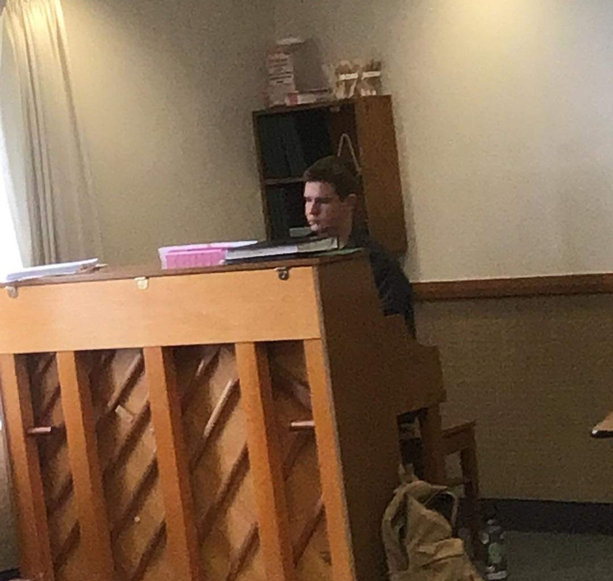

Welcome!
Hi there, thanks for stopping by! I'm Ryan, a student and pianist located in the Rexburg area. If you're looking for a piano accompanist for a choir, musical number, or other performance, then I might be able to help you out! I'm an accomplished pianist with experience as an accompanist and piano teacher. I love making music with people and making new connections with people!
I'm also a composer and arranger, and it's one of my favorite things (hence, this website). If you want a song arranged for you to perform, or if you have a project in need of original music, reach out to me and let's talk!
A word of warning; I am a college student with a busy course load, so I will need to make sure me and my schedule can handle helping out before I commit to anything. And, while I am accomplished at the piano, I am still in the process of developing my own skills, so I need to review any music I would need to play before I can commit. Practice takes time, and while I would love to help out everywhere, sometimes the music might be better suited for another musician.
